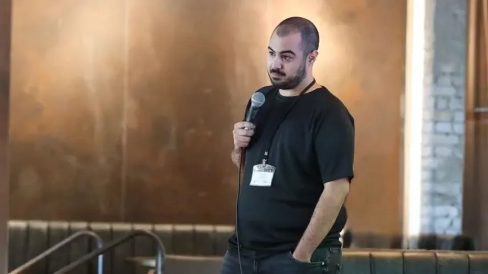
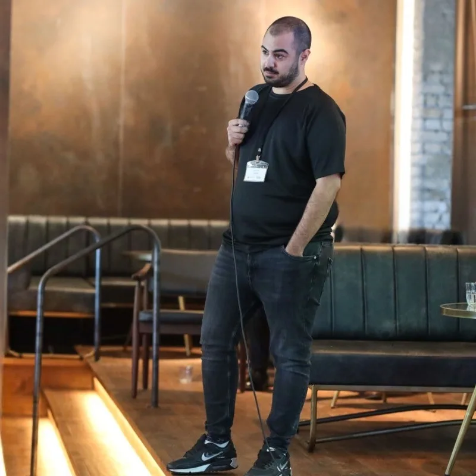
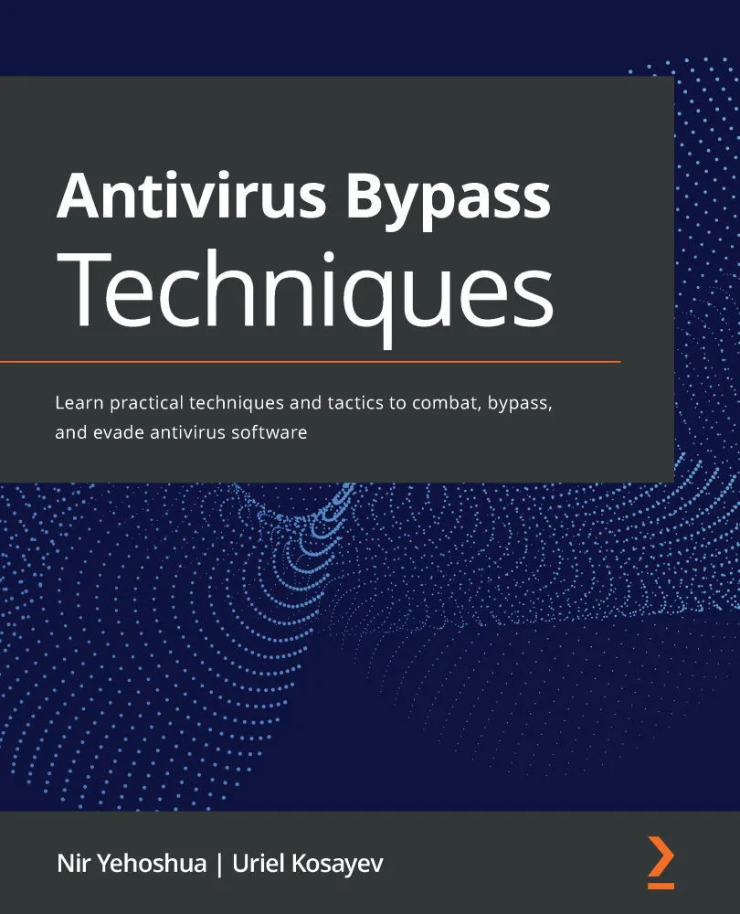

מה קורה כשחוקרי סייבר פוגשים את המיונים?

סרטון זמני. כאן יעלה הסרטון של ניר.
ההכנה העמוקה ביותר ליחידות הטכנולוגיות.
בהובלת חוקרים פעילים בחברת הסייבר Cipher Security Labs.
15 מקומות בלבד.
לתלמידי י׳–י״ב שצפויים להיות או כבר נמצאים במגמת מדעי המחשב, עם בסיס בתכנות, שייבחרו בקפידה. המחזור נפתח ב־1.1.2027.
כולם מגיעים למיונים עם אותה הכנה.
אותם יסודות, אותם כלים, אותם תרגילים. כשכולם יודעים אותו דבר, היתרון הסטטיסטי עובר למי שהלך עמוק יותר.
בסייבר, יש מי שמגן. יש מי שתוקף. ויש מי שמוצא את מה ששניהם פספסו.
בכל הכנה ליחידות לומדים להגן ולתקוף. אצלנו לומדים גם לחקור.
הניסיון מהשטח שמועבר לתלמידים:
את HP אתם מכירים. הנה מה שניר מצא בתוכנה שלה.
ניר יהושע, המרצה של התכנית, בדק את HP Easy Start: התוכנה שמתקינה מדפסות HP במחשבי Mac.
וזו רק אחת. ב־2026 לבד פרסמה Cipher יותר מ־30 חולשות מתועדות.
כשהחוקרים של Cipher מוצאים חולשה, עיתונות הסייבר בעולם כותבת על זה.
אנו מתכבדים וגאים להציג את המרצה:
ניר הוא מי שילמד את הילד שלכם.
לא מדריך שסיים את השירות לפני שנה. חוקר שעושה את זה כל יום.

ניר יהושע. מייסד שותף ומוביל המחקר ההתקפי ב־Cipher Security Labs. יותר מעשר שנות מחקר סייבר, ויוצא צוות עילית למחקר אבטחה ותגובה לאירועים בצה״ל.
השם שלו רשום בדיווחי החולשות הרשמיים של:
- HP
- Dell
- Ericsson
- Fujitsu

הספר שכתב על עקיפת אנטי־וירוס ↗Antivirus Bypass Techniques, הוצאת Packt, 2021. נכתב יחד עם אוריאל קוסייב.לצידו מלווים את התלמידים חוקרי Cipher: בין המפגשים ובקהילה.
30 מפגשים אינטנסיביים. אבל אף פעם לא לבד.
פעמיים בשבוע, שעתיים, מהבית. ובין המפגשים תמיד יש עם מי לחשוב.
מתרגלים במעבדות של CyCube!
סביבות תרגול בענן, שבהן מתאמנים גם סטודנטים בטכניון ואנשי הסייבר של בנק ישראל. מקום בטוח לנסות, לטעות ולהבין. להכיר את CyCube ↗
למצוא איך השרת מזהה משתמשים.
בסוף: סימולציית מיון ומבחן CTF. תעודה מקבלים רק אם עוברים. למצטיינים: מסלול המשך ב־Reverse Engineering, בקבלה נפרדת.
18 פרקים. מהיסודות ועד מחקר חולשות.
החליקו, וכל פרק יורד שכבה לעומק. לחיצה על פרק פותחת את הנושאים שלו.
שימו לב, זו לא סיסמה:
לא כל מי שרוצה מתקבל.
15 מקומות במחזור. אין שיעור ניסיון: אפשר לבדוק אותנו, אי אפשר לבדוק מחויבות בשעה אחת.
- בדיקת התאמה4 שאלות, כאן בעמוד
- שיחהטלפון קצר איתכם
- ראיוןעם הנער או הנערה
- מבחןאצלנו
9,900 ₪.
כתוב מראש, כדי שתגיעו לשיחה כשאתם כבר יודעים. כולל 30 מפגשים עם חוקרים פעילים, מעבדות CyCube, ליווי בין המפגשים, שנה בקהילה וסימולציית מיון.
מה הנערים צריכים לדעת כבר מעכשיו?
סמנו מה נכון עבורם:
כל סימון משנה את הצעד הבא שנציע לכם.
חסר בסיס? יש מסלול הכנה: למידה עצמית שמתחילה מיד, 873 ₪ בתשלום אחד, כולל 3 חודשים בקהילת הדיסקורד של Cipher. בסופו מבחן, ומי שעובר חוזר לשלבי הקבלה לתכנית המלאה.
הם רוצים להגיע ליחידות הטכנולוגיות.
עכשיו תורם להראות איך הם חושבים.
אתגר Cipher: לפרוץ לשרת ייעודי ולהשיג את ה־FLAG. ברשותכם שלושה רמזים. אין להשתמש ב־AI. יתרון משמעותי בקבלה למי שפותר.
לפניכם אתגר Cipher. לחצו על הסמל להתחלת האתגר.
בדיקת התאמה. 4 שאלות, דקה אחת.
אחרי התשובות נגיד לכם בכנות מה הצעד הבא, גם אם הוא לא אצלנו.
לפני שמדברים.
התכנית מבטיחה קבלה ל־8200?
לא. אף אחד לא יכול להבטיח את זה, ואנחנו לא נעשה את זה. אנחנו מחליטים לאיזו רמה אנחנו מכינים, לא לאן מתקבלים.
אין להם עדיין ידע בסייבר. אפשר להתחיל?
כן, דרך מסלול ההכנה: למידה עצמית שמתחילה מיד, 873 ₪ בתשלום אחד, כולל 3 חודשים בקהילת הדיסקורד של Cipher. בסופו מבחן מסכם, ומי שעובר חוזר לשלבי הקבלה לתכנית המלאה. אנחנו חוזרים אליכם אחרי התוצאות.
הם בכיתה ט׳. אפשר להתקבל?
המחזור מיועד לכיתות י׳–י״ב, ותלמידי ט׳ יכולים להתקבל בהחרגה. מה שכן מומלץ להם: להתחיל כבר עכשיו במסלול ההכנה.
איפה ומתי לומדים?
מהבית, פעמיים בשבוע, שעתיים כל מפגש. המחזור נפתח ב־1.1.2027, והימים והשעות נמסרים בשיחת ההתאמה.
יש שיעור ניסיון?
לא. אפשר לבדוק אותנו: את המחקרים, את הספר ואת החולשות שפרסמנו. אי אפשר לבדוק מחויבות בשעה אחת.
מה קורה אחרי בדיקת ההתאמה?
נחזור אליכם לשיחה קצרה. אם יש התאמה, נקבע ראיון עם הנער או הנערה, ואחריו מבחן אצלנו.